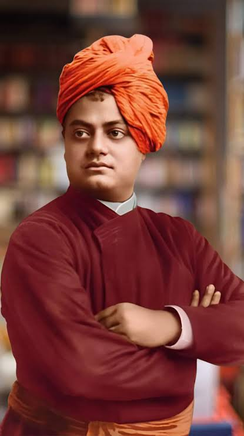

Swami Vivekananda born on 12 January 1863 – 4 July 1902, born Narendranath Datta, was an Indian Hindu monk, philosopher, author, religious teacher, and the chief disciple of the Indian mystic Ramakrishna. Vivekananda was a major figure in the introduction of Vedanta and Yoga to the Western world during the late 19th century, and is credited with raising interfaith awareness and elevating Hinduism to the status of a major world religion.[9]Vivekananda showed an early inclination towards religion and spirituality. At the age of 18, he met Ramakrishna and became his devoted disciple, and later took up the vows of a sannyasin (renunciate). Following Ramakrishna’s death, Vivekananda travelled extensively across the Indian subcontinent as a wandering monk, gaining first-hand knowledge of the often harsh living conditions endured by the Indian masses under then British India, he sought a way to alleviate their suffering by establishing social services but lacked capital.
In 1893, he travelled to the United States to participate in the Parliament of the World's Religions in Chicago, where he delivered a landmark speech beginning with the words "Sisters and brothers of America...". His powerful message introduced Hindu spiritual thought and advocated for both religious tolerance as well as universal acceptance.The speech made a profound impression; an American newspaper described him as "an orator by divine right and undoubtedly the greatest figure at the Parliament".
# On Personal Growth : He emphasized taking complete ownership of your life and remaining steadfast in the face of continuous difficulties.
# On Inner Strength : He consistently taught that individuals possess limitless internal power and should never consider themselves fundamentally weak.
# On Focus and Success : He urged people to fully immerse their minds and bodies into a single major ambition to achieve true greatness.